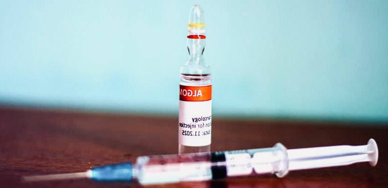

+380(97) 369 76
65
+380(97) 369 76
65Кодирование от алкоголизма уколом
Кодирование от алкоголизма - проверенный метод лечения зависимости.
Работаем в Одессе, Киеве, Львове, Харькове, Днепре, Запорожье, Черноморске


Бесплатная консультация, работаем круглосуточно 24/7
Кодирование от алкоголизма - проверенный метод лечения зависимости.
Работаем в Одессе, Киеве, Львове, Харькове, Днепре, Запорожье, Черноморске
Кодирование от алкоголизма уколом - это самый распространенный метод специфического лечения алкогольной зависимости с помощью которого у пациента удается сформировать стойкое отвращение к алкоголю на физическом и психологическом уровне. Кодировка с помощью укола дисульфирама делается с целью полного прекращения употребления любых спиртных напитков. В случаи если пациент закодированный уколом примет любую дозу алкоголя у него начнется немедленная токсическая реакция которая может привести к летальному исходу.
Укол от алкоголизма на данный момент в Украине является лучшим методом из всех возможных для лечения алкогольной зависимости. Укол от алкоголизма дисульфирама вызывает стойкое непереносимое отвращение к любой выпивке и может вводиться сроком до пяти лет.
Горячий укол от алкоголизма это улучшенный вариант кодирования от алкоголя уколом, который проходит в два этапа. Первый этап - это введение масленой формы дисульфирама под лопатку с помощью инъекции, а второй этап это введение жидкой формы дисульфирамо-подобного вещества в вену, тем самым препарат для кодирования от алкоголизма проникает во все органы и системы. Такой метод в отличии от классического имеет характерный прилив тепла во время инъекции а так же увеличивает силу отвращения к алкоголю.
Кодирования от алкоголя в вену это не давний, современный метод лечения алкогольной зависимости появившийся в наркологии в начале 2010 года, имеющий ряд положительных эффектов и является дополнением к классической кодировки уколом дисульфирама под лопатку. Кодирование от алкоголизма в вену имеет более концентрированный и сильный эффект в сравнении с классическим методом введения дисульфирама под лопатку. При кодировании от алкоголя в вену пациент испытывает сильное ощущение тепла и головокружение которое проходит в течении для это связанно с тем что дисульфирама-подобное вещество моментально проникает во все органы и системы, тем самым формируя стойкое отвращение к любому алкогольному напитку.
Срок кодирования от алкоголизма меняется в зависимости от препарата и методики лечения, начинается от 4 недель и может длиться до 5 лет. Обычно первая доза дисульфирама водится сроком на 8 - 12 месяцев. Этого времени как правило достаточно для полной адаптации к трезвой жизни после которой у пациент нет желания когда либо в будущем употреблять спиртные напитки.
Классический метод кодирования от алкоголизма уколом происходит путем ведения дисульфирама под лопатку который проникает и пропитывает жировую клетчатку тем самым сохраняясь в организме длительное время.
Что бы закодироваться от алкоголя вам нужно не пить минимум пять дней, после чего можно пройти специфическое лечение алкоголизма путем ведения дисульфирама под лопатку.
Кодирование уколом - является золотым стандартом в лечении алкоголизма во всем мире. Препарат вызывает стойкое отвращение к выпивке на психологическом и физическом уровне, имеет низкий уровень противопоказаний и высокий положительный эффект даже при ведении минимальных доз. Кодирование уколом происходит двумя препаратами на выбор больного
Каждый укол от алкоголизма имеет свой ряд плюсов и минусов но оба очень эффективны и безопасны в лечении алкогольной зависимости.
Укол с дисульфирамом используется врачами наркологами в лечении хронического алкоголизма, это самый надежный, безопасный и проверенный на сегодняшний момент метод кодирования от алкоголизма. Укол дисульфирам производят в Америке что обеспечивает высокую чистоту в сырье и огромную доказательную базу в лечении.
Эспераль это современный препарат для лечения алкоголизма на основе дисульфирама. На данный момент зарекомендовал себя во Франции а так же Португалии. В отличие от классического дисульфирама имеет более чистую формулу что обеспечивает менее гепатотоксичный эффект и может использоваться для лечении алкоголизма даже у людей с гепатитом различной этиологии.
В случаи когда дисульфирам невозможно ввести под лопатку врач нарколог может предложить альтернативное введение препарата в ягодицу, такой метод ничуть не хуже но имеет один минус, так как в мышечном слои протекает большое количество сосудов то срок действия введенного дисульфирама уменьшиться.
Цена кодировки уколом может меняться в зависимости от срока и выбора производителя препарата. Цена кодирование уколом в Украине начинается от 3999 грн.
Что бы закодироваться от алкоголизма уколом в Украине вам нужно позвонить по номеру 050-021-69-57.
Что бы закодироваться от алкоголизма уколом вам нужно обратиться к врачу-наркологу или в наркологический центр UmbrellaPlus врач нарколог расскажет вам о плюсах и вариантов кодирования уколом а так же расскажет все возможные последствия любого употребления алкоголя во время кодирования. Что бы закодироваться от алкоголизма уколом вам нужно позвонить по номеру 050-021-69-57.
К основными противопоказаниями к кодированию от алкоголизма уколом дисульфирама является:
Анонимно

"Дуже довго не міг самостійно позбавитися залежності, тому зважився на підшивку. Процедура пройшла успішно, і з того часу я навіть не думаю про спиртне. Страх перед можливими наслідками допомагає триматися на плаву, а підтримка фахівців – величезна підмога у цьому нелегкому шляху. Центр надає як фізичну, а й моральну допомогу. Вдячний їм за другий шанс."
Анонимно
"Решила сделать укол от алкоголизма по рекомендации подруги, которая проходила эту процедуру в этом же центре. Я сомневалась, но врачи всё объяснили, успокоили. После укола не чувствую тяги к алкоголю, хотя раньше сложно было представить день без выпивки. Сейчас наслаждаюсь трезвостью, чувствую себя намного лучше."
Анонимно
"Я никогда не думал, что психологическое воздействие может настолько сильно повлиять на мою жизнь. Врач помог осознать всю серьезность ситуации, и теперь алкоголь не вызывает у меня никакого интереса. Процедура безопасна и эффективна, рекомендую тем, кто хочет по-настоящему изменить свою жизнь."
Анонимно
"Я прошла кодирование гипнозом, и это было удивительное переживание. Во время сеанса я почувствовала глубокое расслабление, а потом – будто внутри что-то изменилось. Сейчас я свободна от алкоголя и наслаждаюсь этим состоянием. Благодарю центр за профессионализм и заботу! Отдельная благодарность Станиславу Вячеславовичу"
Анонимно
"Чесно кажучи, боявся рецидиву, але з процедури минуло півроку, і я навіть не думаю про випивку. Життя почало змінюватися на краще. Дякуємо лікарям за підтримку та мотивацію!"
Анонимно
"Після багаторічної боротьби із залежністю вирішила звернутись в клінку. Спочатку переживала, але лікарі дуже докладно розповіли про процес та можливі наслідки. Зараз я не п'ю вже 8 місяців і почуваюся чудово. Я така щаслива, що знайшла цей центр і знайшла контроль над своїм життям."
Анонимно
"Метод Долженко казался мне странным, но я решил попробовать. Оказалось, что это не просто кодировка, а глубокая работа с психикой. Это позволило мне кардинально изменить отношение к алкоголю. Уже год я не пью, и не планирую возвращаться к прежней жизни. Простое человеческое спасибо!"
Анонимно
"Гипноз помог мне избавиться от постоянной тяги к алкоголю. После сеансов я заметила, что стала спокойнее и увереннее в себе. Теперь алкоголь меня больше не интересует. Центр мне очень помог, и я благодарна за их заботу и поддержку."
Приезд в течении 60 минут от момента поступления заявки
Наши филиалы есть во всех больших городах Украины.
Мы оказываем профессиональную доказательную медицинскую помощь. Гарантией является наше имя.
Номер телефона:
+380 (97) 369 76 65
+380 (50) 021 69 57
Адрес главного офиса: г. Харьков ул. Сумская 47
Офис вашего города нужно
уточнить
Работаем в: Одессе, Киеве, Львове, Харькове, Днепре,
Запорожье
Telegram: t.me/umbrellaplus
График работы: Круглосуточно